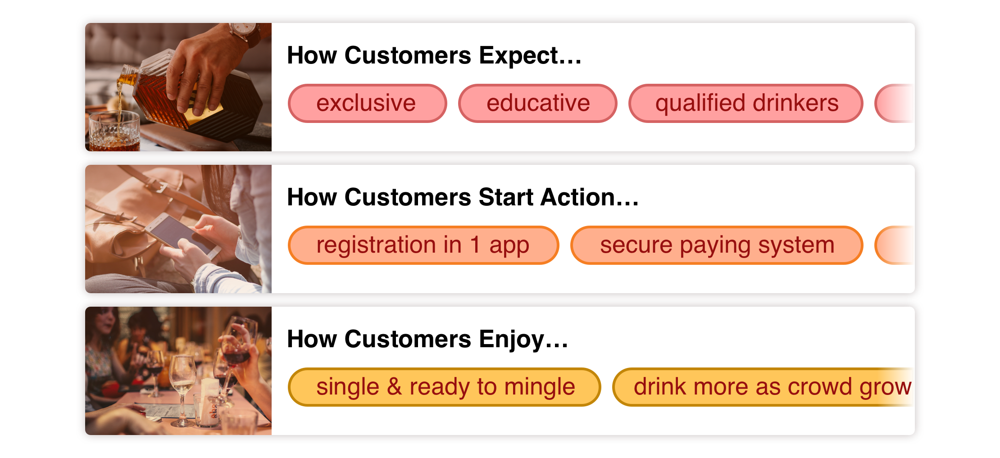
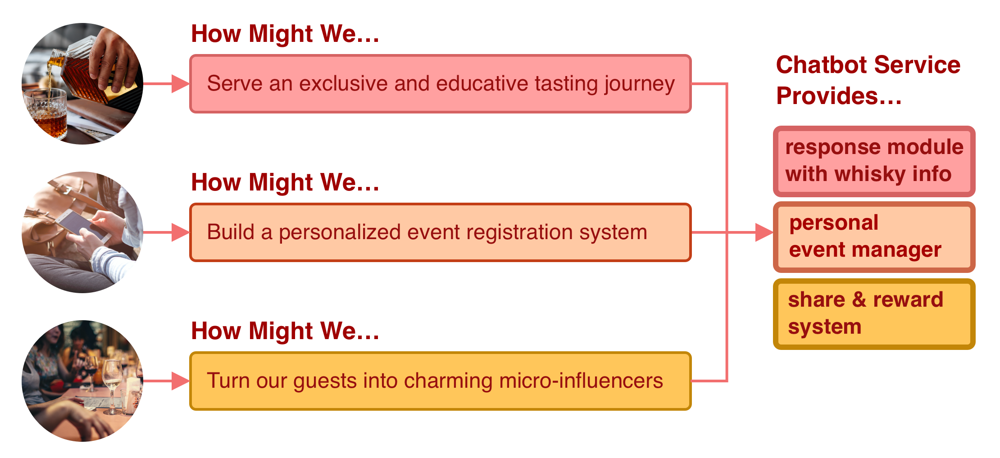

Chatbot Service for Whisky Brand
OVERVIEW
A multinational whisky company owned a profitable channel through whisky tasting events, however, it had long suffered from the cost of retaining the guests to attend the upcoming events. Therefore, the company was inquiring for the approach to renew the current digital strategy, in order to achieve a smarter and more efficient guest-recruiting process, and enhance the customer loyalty as well. Therefore our team proposed a chatbot service featured in easy sign up system and membership management. My role is to execute UI design, usability testing, and cross-team collaboration with developers and legal associates.
COLLABORATE WITH
Project Lead｜Doris Kuo
Project Manager｜Wright Lin
Visual Design｜Ogilvy Creative Team
UX Supervisor｜Gibo Liao
Developers｜Ogilvy Data Martech Team
Project Manager｜Wright Lin
Visual Design｜Ogilvy Creative Team
UX Supervisor｜Gibo Liao
Developers｜Ogilvy Data Martech Team
MY ROLE
Wireframing
UI Design
UX Copywriting
Usability Testing
Project Management
UI Design
UX Copywriting
Usability Testing
Project Management
APPROACH
Phase 1. Take a seat, have a sip, and talk about the profit journey
In order to find out how this relaxing yet luxurious beverage has been sold, the Ogilvy AE Team was invited to the bar owned by the company to have a pleasant meetup and found that:
i. People who like to drink whisky expect themselves not only to be capable of buying it, but also be the qualified drinkers with the know-how of tasting.
ii. According to the consumer behavior study, people tend to buy more with companions. As for whisky purchasing behavior, male customers tend to spend more with female companions.
iii. The feedback from the guests had shown that the events sign up process are way too much to handle through mobile devices, and they often get confused with the paying system whether they had successfully registered or not.
i. People who like to drink whisky expect themselves not only to be capable of buying it, but also be the qualified drinkers with the know-how of tasting.
ii. According to the consumer behavior study, people tend to buy more with companions. As for whisky purchasing behavior, male customers tend to spend more with female companions.
iii. The feedback from the guests had shown that the events sign up process are way too much to handle through mobile devices, and they often get confused with the paying system whether they had successfully registered or not.

Phase 2. Apply the right digital approach to optimize CRM value
After diving into the customer journey and the primary profit channel, we had come to the points that:
i. An exclusive and educative tasting journey should be served.
ii. Companions are essential, so it will be even better to make the honorable guests into charming micro-influencers through their own social communities, in order to amplify the gathering volume.
iii. Smart and personalized event registration system is a must that brings everything come together.
That was when the idea of building a chatbot service came in, applying the service within the widely used messaging APP, including following features:
i. General knowledge of whisky and product information are provided through automatic response module.
ii. Sharing and rewarding system are provided to enhance social engagement.
iii. Events can be signed up within the chatbot account and managing the registration status.
i. An exclusive and educative tasting journey should be served.
ii. Companions are essential, so it will be even better to make the honorable guests into charming micro-influencers through their own social communities, in order to amplify the gathering volume.
iii. Smart and personalized event registration system is a must that brings everything come together.
That was when the idea of building a chatbot service came in, applying the service within the widely used messaging APP, including following features:
i. General knowledge of whisky and product information are provided through automatic response module.
ii. Sharing and rewarding system are provided to enhance social engagement.
iii. Events can be signed up within the chatbot account and managing the registration status.

Phase 3. Construct page flow and prototyping

Sign up process

Sharing system

Response module
Phase 4. Assure the payment system and legal issues
In order to assure the quality of the sign up process through different operation system, I was assigned to conduct several testing through devices, and assisted the in-house development, chatbot API provider, and the third party online paying system to smoothly cooperate.
According to the law of alcohol merchandising, the visual materials needed to apply certain rules before the official launch. To make sure the visual material were presented under the legal ratio, I was assigned to generate the guideline report as a cross-team communication guidebook.
According to the law of alcohol merchandising, the visual materials needed to apply certain rules before the official launch. To make sure the visual material were presented under the legal ratio, I was assigned to generate the guideline report as a cross-team communication guidebook.
RESULT
1 Chatbot service provided within an official account
1 Legal visual guideline report for UI execution
2 Successful sharing and rewards campaigns
5 Following tasting events was held and more
1 Legal visual guideline report for UI execution
2 Successful sharing and rewards campaigns
5 Following tasting events was held and more